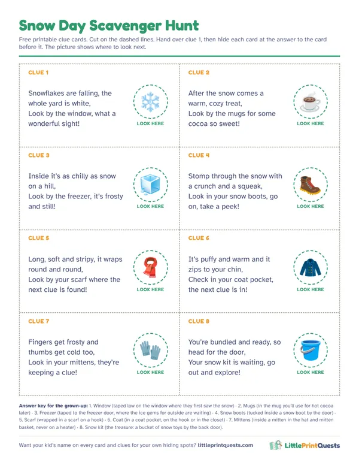

Snow day scavenger hunt for kids
School is canceled, the yard is white and everyone is up early. This hunt gives the morning a plan: the clues lead through the kitchen and then to each piece of snow gear, so by the last card your kid is bundled up at the back door with a snow kit waiting.
Make a personalized snowy hunt8 free rhyming clues
Hide each clue at the answer to the clue before it while the kids eat breakfast. They put on each piece of snow gear as they find it, and the last card sends them outside.
Clue 1
Snowflakes are falling, the whole yard is white,
Answer: Window. Hide it: Taped low on the window where they first saw the snow.
Look by the window, what a wonderful sight!Clue 2
After the snow comes a warm, cozy treat,
Answer: Mugs. Hide it: In the mug you’ll use for hot cocoa later.
Look by the mugs for some cocoa so sweet!Clue 3
Inside it’s as chilly as snow on a hill,
Answer: Freezer. Hide it: Taped to the freezer door, where the ice gems for outside are waiting.
Look by the freezer, it’s frosty and still!Clue 4
Stomp through the snow with a crunch and a squeak,
Answer: Snow boots. Hide it: Tucked inside a snow boot by the door.
Look in your snow boots, go on, take a peek!Clue 5
Long, soft and stripy, it wraps round and round,
Answer: Scarf. Hide it: Wrapped in a scarf on a hook.
Look by your scarf where the next clue is found!Clue 6
It’s puffy and warm and it zips to your chin,
Answer: Coat. Hide it: In a coat pocket, on the hook or in the closet.
Check in your coat pocket, the next clue is in!Clue 7
Fingers get frosty and thumbs get cold too,
Answer: Mittens. Hide it: Inside a mitten in the hat and mitten basket, never on a heater.
Look in your mittens, they’re keeping a clue!Clue 8
You’re bundled and ready, so head for the door,
Answer: Snow kit. Hide it: The treasure: a bucket of snow toys by the back door.
Your snow kit is waiting, go out and explore!
Free printable clue cards
All 8 clues on one sheet with picture hints for pre-readers, dashed cut lines and an answer key for the grown-up doing the hiding. Print it, cut it, hide it.

Download the free printable (PDF)
A hunt that gets them dressed
Getting a 4 year old into snow gear can take longer than the snow play. This trail turns it into the game: after the window, the mugs and the freezer, every stop is a piece of gear, and the kids put it on as they find the card. Mittens come last, because nobody can pick up a clue card in mittens.
- Snow pants first. Have them on before the first clue, then the hunt does boots, scarf, coat and mittens.
- Bathroom before boots. Make the freezer stop a bathroom stop too. Nobody wants to unzip a snowsuit five minutes later.
- Lay the gear out the night before. When the snow is in the forecast, put each kid’s gear in a pile by the door and hide the cards in it in the morning.
What to put in the snow kit
Any bucket or bin by the back door works. Fill it with things that make snow play last longer:
- Spray bottles of water with a few drops of food coloring, for painting the snow.
- Sand toys and cookie cutters for snow bricks and snow shapes.
- A small shovel for digging a path or a snow fort.
- Ice gems: water with food coloring frozen in a muffin tin the night before.
- A dry pair of mittens for when the first pair gets soggy.
Keep the hunt going outside
Paper clues don’t last in the snow, but a second hunt can. Hide the ice gems in the snow while the kids watch from the window, then send them out to dig. Count them as they come in so you know when they’ve found them all. Or give them a list to spot: a footprint, a bird track, an icicle, a pinecone, a snowball as big as their head.
- Muffin-size gems only. Skip ice cube trays and small beads for kids under 3: big gems are easy to find and too big to swallow.
- Short trips for little kids. 15 to 20 minutes out, then warm up inside and check hands and toes.
- Stay off the plow piles. Keep play away from the street and the snowbanks along it, off frozen ponds, and out from under icicles on the roof edge.
When it’s too cold to go out
Some snow days are for looking, not playing. Bring a bin of snow inside to play with in mittens at the table, run the hunt to end at the cocoa mugs instead of the door, or set up a cozy coffee shop with cocoa on the menu. A snowy Ice Kingdom hunt or a pretend Ice Palace fills the rest of the day. Our printed hunts have your kid’s name on every page and arrive by email in minutes.
Make a personalized snowy hunt
Questions
What can kids do on a snow day?
Start with a scavenger hunt that ends at the back door in full snow gear, then play outside in short trips: paint the snow with colored water, dig for ice gems, build with sand toys. Warm up with cocoa and a pretend play game when they come in.
How do you make ice gems for a snow hunt?
Fill a muffin tin with water, add a few drops of food coloring to each cup and freeze it overnight. Pop the gems out in the morning and hide them in the snow. Muffin-size gems are easy to spot and too big for little ones to swallow.
Can a 3 year old do a snow day scavenger hunt?
Yes. Read the rhymes out loud and use the free printable, which has a picture of the hiding spot on every card so little ones can find it themselves. A grown-up helps with zippers and mittens along the way.
More hunt ideas
- Birthday party hunt
- Ages 3 to 5
- Ages 6 to 8
- Thanksgiving hunt
- Classroom hunt
- Christmas Eve hunt
- New Year’s Eve hunt
- Apartment Scavenger Hunt
- Indoor Scavenger Hunt for a House
- Backyard Scavenger Hunt
- Dinosaur hunt
- Superhero hunt
- Pirate hunt
- Outer Space hunt
- Princess & Knights hunt
- Unicorn hunt
- Mermaid hunt
- Construction hunt
- Pet Vet hunt
- Easter hunt
- Halloween hunt
- Christmas hunt
- Valentine’s hunt
- Firefighter hunt
- Ice Kingdom hunt
- Race Car hunt
- Pizza Shop hunt
- Burger Shop hunt
- Grocery Store hunt
- Post Office hunt
- Library hunt
- Police Station hunt
- Dentist hunt
- Pet Shop hunt
- Coffee Shop hunt
- Italian Restaurant hunt
- Auto Shop hunt
- Play Kitchen hunt
- Doctor hunt
- Puppet Theater hunt
- Secret Agent hunt
- Dress-Up hunt
- Ice Cream hunt
- Airport hunt